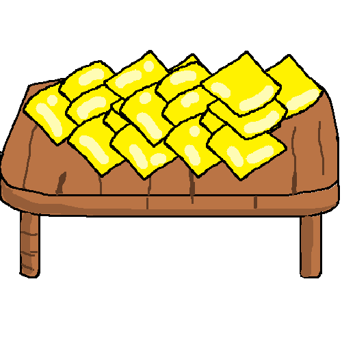

Queso Gourmet
El queso gourmet es una delicadeza elaborada con ingredientes de alta calidad y técnicas artesanales. Ofrece un sabor intenso y sofisticado, ideal para degustaciones y acompañamientos. Perfecto para los paladares más exigentes.
Precio de venta (kilo): S/.39.90